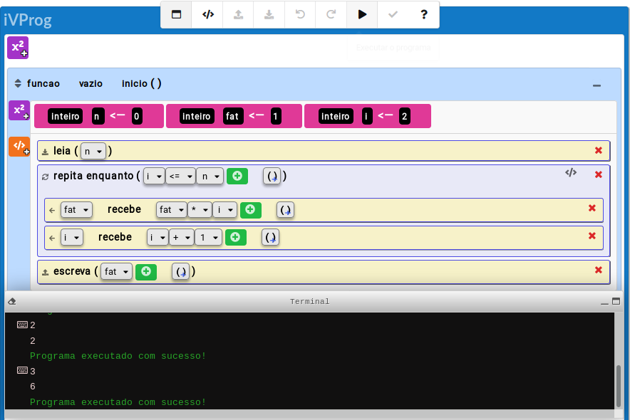

Executar
Executa as instruções contidas no código do programa iVProg. Inicia-se sempre pela função inicio.
Na figura 1 apresentamos um exemplo de código (para computar fatorial de natural) e um exemplo de simulação de execução.

Fig. 2. Exemplo de program visual para computar fatorial usando um laço repita_enquanto.
Ao "clicar" no botão para executar ,
produz-se a seguinte sequência de execução:
1. inteiro n <- 0, fat <- 1, i <-2
2. leia(n) // digitado 3___________
3. repita enquanto (2<=3) //_______
4. fat recebe 1 * 2 //_____________
5. i recebe 2 + 1 //______________
6. repita enquanto (3<=3) //_______
7. fat recebe 2 * 3 //_____________
8. i recebe 3 + 1 //_______________
9. repita enquanto (4<=3) //_______
10. escreva(fat) // fat=6 __________
| |
|
n | fat | i
0 | 1 | 2
3 | |
| |
| 2 |
| | 3
| |
| 6 |
| | 4
| |
| | |
|